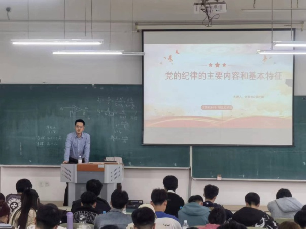
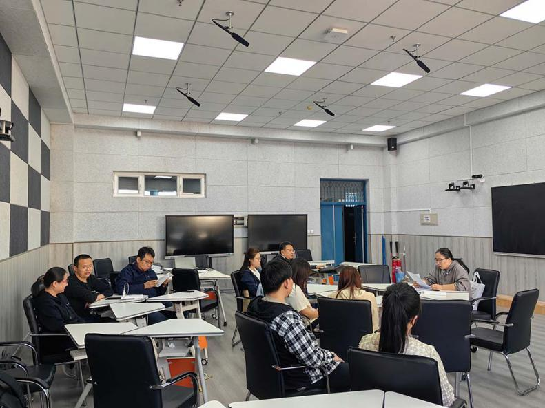
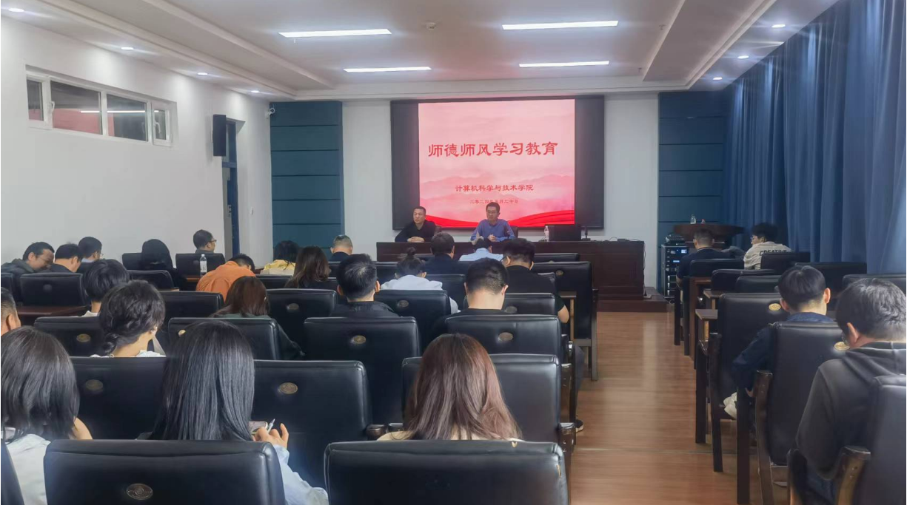
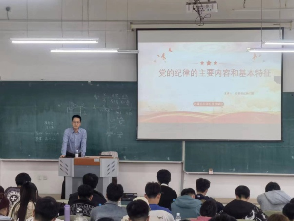
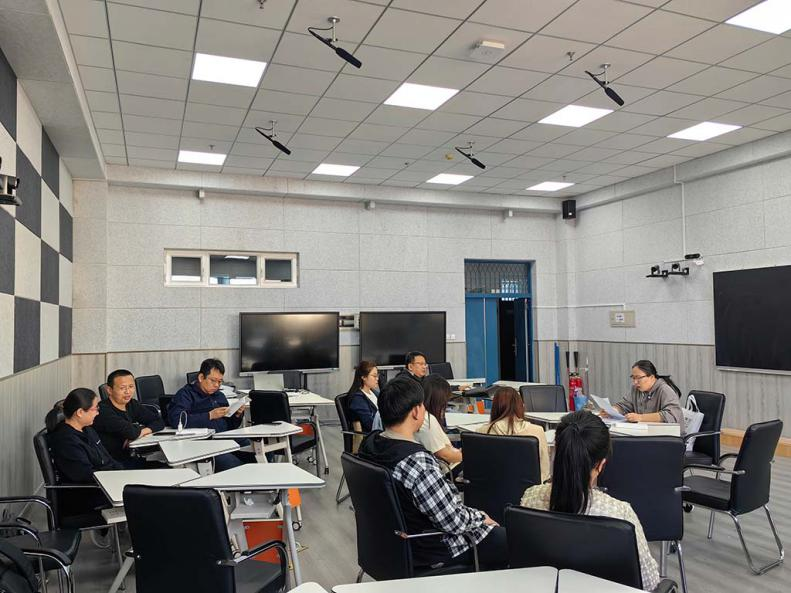
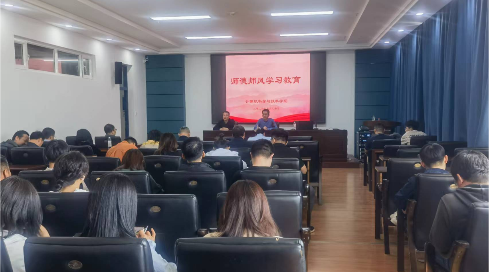
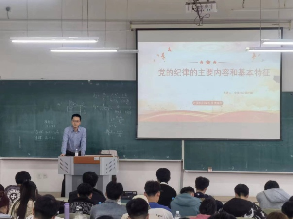
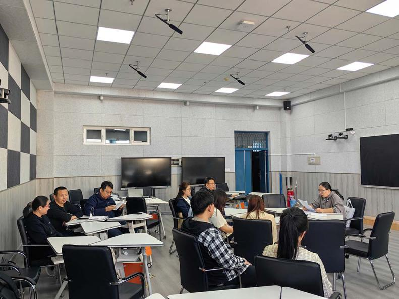
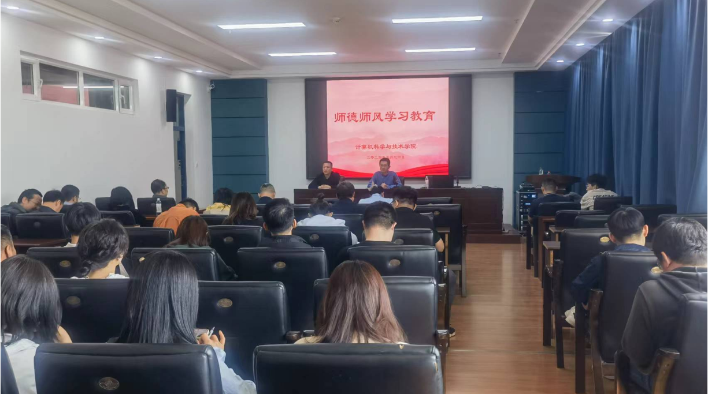

旧版网站
首页
学院概况
学院介绍
现任领导
委员会
学院办公室
学生工作办公室
系、中心
师资队伍
荣誉称号
研究生导师
教师队伍
人才引进
人才培养
本科生培养
研究生培养
博士生培养
现代产业学院
学科建设
学科简介
学科方向
支撑平台
博士后流动站
专业建设
一流本科专业
工程教育专业认证
新工科
学生指导
研究成果
科学研究
科研动态
科研成果
教师队伍
人才引进
党群工作
基层党组织
党建理论
党建学习
党建活动
党建风采
能力作风建设
学习贯彻省十三次党代会精神
喜迎二十大系列活动
学生工作
团学组织
学生党建
学生活动
心理健康
青春榜样
招生就业
本科生招生
研究生招生
就业工作
校友之家
校友风采
校庆专栏
学院要闻
更多>>
通知公告
更多>>
  
校长刘侠、副校长杜军深入学院开展学科...
计算机科学与技术学院党校圆满完成2024...
以党纪学习教育推动中心工作——计算机科...
计算机科学与技术学院开展师德师风教育...
计算机科学与技术学院召开新一轮本科教...
<
>
校党委书记赵琳深入学院调研指导
校长刘侠、副校长杜军深入学院开展学科建设
为深入贯彻落实学校“学科建设年”精神和相关工作部署
计算机科学与技术学院召开新一轮本科教育教学审
计算机科学与技术学院开展师德师风教育暨云办公
计算机科学与技术学院党校圆满完成2024年上半年
以党纪学习教育推动中心工作——计算机科学与技术
31
2024-05
计算机科学与技术学院2024年研究生指导教师遴选初评公示
31
2024-05
计算机科学与技术学院2024年研究生指导教师遴选初评公示
31
2024-05
计算机科学与技术学院2024年研究生指导教师遴选初评公示
党建活动
更多>>
计算机科学与技术学院开展师德师风教...
05/22
计算机科学与技术学院党校圆满完成20...
05/20
以党纪学习教育推动中心工作——计算机...
05/20
计算机科学与技术学院召开辅导员队伍...
05/15
学院召开党委理论学习中心组学习会议
04/16
学院召开党委理论学习中心组学习会议
03/29
纪委书记孙树海深入学院指导主题教育...
09/01
党建活动
更多>>
计算机科学与技术学院开展师德师风教...
05/22
计算机科学与技术学院党校圆满完成20...
05/20
以党纪学习教育推动中心工作——计算机...
05/20
计算机科学与技术学院召开辅导员队伍...
05/15
学院召开党委理论学习中心组学习会议
04/16
学院召开党委理论学习中心组学习会议
03/29
纪委书记孙树海深入学院指导主题教育...
09/01
党建活动
更多>>
计算机科学与技术学院开展师德师风教...
05/22
计算机科学与技术学院党校圆满完成20...
05/20
以党纪学习教育推动中心工作——计算机...
05/20
计算机科学与技术学院召开辅导员队伍...
05/15
学院召开党委理论学习中心组学习会议
04/16
学院召开党委理论学习中心组学习会议
03/29
纪委书记孙树海深入学院指导主题教育...
09/01
师生风采
更多>>
守正创新攀高峰 团结奋进开新...
躬身耕耘爱生如子，行为师范卓...
计算机学院党员学生志愿者在防疫...
做守护祖国网络天空的雄鹰...
守正创新攀高峰 团结奋进开新...
躬身耕耘爱生如子，行为师范卓...
计算机学院党员学生志愿者在防疫...
做守护祖国网络天空的雄鹰...
专业介绍
计算机科学与技术
网络工程
软件工程
集成电路设计与集成系统
物联网工程
数据科学与大数据技术
校内资源
校内办公
图书馆
理工邮箱
教务在线
教师主页
新闻网
ACM-ICPC


 





 计科芳华
计科芳华
 学校公众号
学校公众号